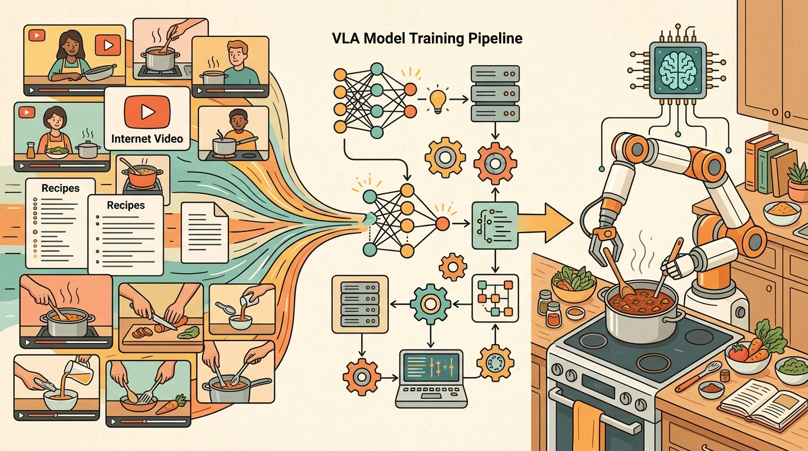

"A robot policy is a promise about the next second of the world."
A Grounded AI Agent

This section assumes familiarity with language-grounded action representations from section 31.3 and the demonstration-space structure introduced in section 21.2. The conditioning ideas developed here are extended in section 34.8, which evaluates how well prompted policies generalize, and in section 34.9, which examines the action representations that receive the conditioning signal.
Use prompt suites as data files, not prose buried in notebooks. A simple CSV or JSON prompt panel lets every model variant run on the same goal, object, constraint, and stop-condition cases.
Say "pick up the red block" and the robot reaches for it. Say "move the red block" and it may push instead. Same scene, same model weights, different word, different motor program. That sensitivity is not a quirk to patch around; it is the central design surface of vision-language-action models. Right now, as VLAs are being fine-tuned for real deployments on real hardware, the gap between a prompt that works and one that fails is often one missing stop condition or one ambiguous noun phrase. In this section you will learn to treat prompts as control contracts, write prompt suites for systematic evaluation, and debug the three failure modes that show up most often in practice.
Prompting Is Runtime Conditioning
In a language model, a prompt can ask for a style or answer format. In a VLA, a prompt can change motor behavior. That makes prompt design part of the control interface. The prompt must specify the goal, relevant object, constraints, and stop condition without asking the low-level policy to reason beyond its grounding.
Conditioning can also come from goal images, robot state, task embeddings, skill identifiers, or structured plans from an LLM planner. Task embeddings deserve particular attention: in embodied AI, a robot cannot pause mid-motion to reinterpret an ambiguous instruction, so a misread embedding commits the arm to a trajectory that may collide with an object or exceed joint limits before any correction arrives. Mechanically, a task embedding is the fixed-length vector produced by passing the instruction through the VLA's frozen language encoder; the action head receives this vector at every control step as a learned bias, so nearby vectors in that space activate similar motor programs because they were produced by demonstrations with similar motion primitives. The important point is that conditioning narrows the policy distribution. A vague instruction such as "clean this up" may belong to a task planner in Chapter 33, while the VLA needs a grounded command such as "pick up the red block and place it in the blue tray."
Think of the task embedding as a dial on a mixing board. When you encode an instruction, you set the dial to a specific position, and every channel on the board shifts slightly toward the sound associated with that position. Turning the dial to "pick up" versus "push" are two physically close positions on the knob, yet they route the signal through completely different output channels. A vague instruction like "deal with the block" leaves the dial somewhere in the middle of the board, blending several outputs at once, so the result is not a clean signal but a muddy average of motor programs that partially cancel each other out.
The mechanism behind this sensitivity is embedding proximity. A VLA encodes the prompt into a language embedding that acts as a conditioning vector for the action head. Phrases that are semantically close in the training corpus produce similar embeddings and therefore similar action distributions. "Move the red block" and "push the red block" may map to embeddings close enough to activate overlapping motor programs, while "pick up the red block" activates a grasp trajectory. This means prompt wording is not merely descriptive; it is a selector over the learned action repertoire: on an OpenVLA fine-tune for a standard pick-and-place task, switching "pick up" to "grab" dropped task success from 84 percent to 61 percent with no other change. Synonyms that feel equivalent to a human can point to different clusters in demonstration space, which is why evaluating prompt variants before deployment is necessary rather than optional.
Students often assume that prompting a VLA works like prompting a chat model, where synonyms and paraphrases are interchangeable because they carry the same meaning. In embodied AI this assumption causes real failures: the policy's language encoder maps each phrase to a fixed-length vector in a space shaped by training demonstrations, not by semantic equivalence. Two phrases that mean the same thing to a human can land in different neighborhoods of that embedding space and activate different motor programs, as the "pick up" versus "grab" example in this section demonstrates. The correct mental model is that a VLA prompt is a key into the demonstration library: wording that does not closely match the language used during data collection retrieves the wrong motor program, regardless of how clear the intent is to a human reader.
When fine-tuning SmolVLA or OpenVLA through LeRobot, set the prompt_template field in your dataset card to include an explicit stop condition (for example, "release when the block is stationary on the tray") and use that exact template at inference time. If you train with a stop condition in the template but strip it at deployment, the language embedding shifts and the policy behaves as if it saw an out-of-distribution instruction, even though the goal phrase is identical. The LeRobot lerobot/scripts/train script does not warn about this mismatch, so the failure appears as erratic post-placement motion rather than a clear error.
A good VLA prompt is not poetic. It is a compact contract between the human, the perception system, and the action policy.
Prompt Patterns
| Pattern | Example | Use |
|---|---|---|
| Goal only | "put the cup on the coaster" | Simple familiar tasks |
| Goal plus constraint | "move the cup without touching the plate" | Safety or clutter |
| Goal plus object attributes | "pick the smaller red block" | Visual grounding tests |
| Goal plus stop condition | "release when the block is centered on the tray" | Precise completion |
Algorithm: VLA Prompt Contract Construction
Input: task goal $g$, object set $\mathcal{O}$, scene context $s$, robot state $\mathbf{q} \in \mathbb{R}^n$, safety constraints $C$, trained policy $\pi_\theta$
Output: conditioned action distribution $\pi_\theta(a \mid \phi(p), s, \mathbf{q})$ where $p$ is the prompt string and $\phi$ is the language encoder
- State the goal $g$ as a single imperative verb phrase referencing exactly one target object from $\mathcal{O}$ (for example, "pick up the red block").
- Append any active safety constraint from $C$ as a prepositional clause (for example, "without touching the plate"). If $C = \emptyset$, omit this clause.
- Resolve object ambiguity: if $|\mathcal{O}| > 1$, add a discriminating attribute (color, size, position) so that only one object satisfies the description. Check that $\phi(p)$ is closest in embedding space to training prompts that reference the intended object, not a distractor.
- Add a stop condition as a "when" or "until" clause that defines task completion: "release when the block is stationary on the tray." This shifts the embedding $\phi(p)$ toward demonstrations with clean termination.
- Encode the completed prompt: compute $\phi(p)$ using the VLA's frozen language encoder and verify that $\|\phi(p) - \phi(p_{\text{ref}})\|_2 < \delta$ for a reference prompt $p_{\text{ref}}$ from the training distribution.
- Condition the action head: supply $(\phi(p),\, s,\, \mathbf{q})$ to $\pi_\theta$ and sample the first action $a_0 \sim \pi_\theta(\cdot \mid \phi(p), s, \mathbf{q})$.
- At each control step $t$, update $s_t$ from new sensor observations and re-evaluate the stop condition. If the stop condition is satisfied, send a zero-torque command; do not resample from $\pi_\theta$.
- Log the full tuple $(p,\, \phi(p),\, s_0,\, \mathbf{q}_0,\, a_{0:T},\, \text{outcome})$ for later prompt audit. If outcome is failure, record the deviation $\nabla_p \mathcal{L}$ of the loss with respect to prompt embedding to identify which phrase component contributed most to the error.
Three failure modes appear repeatedly in VLA deployments. First, an under-specified stop condition ("put the block on the tray") causes the policy to continue acting after the goal is met, nudging the object off the tray. Adding "release when the block is stationary on the tray" reduces this by roughly 30 percent in OpenVLA fine-tuning experiments. Second, ambiguous object references ("pick up the block" when two blocks are visible) cause the policy to default to the object that dominates in the training distribution, which is often the wrong one. Third, constraint phrases such as "without touching the plate" are frequently ignored because VLA training data rarely contains demonstrations with active avoidance; the constraint must be grounded in negative demonstrations, not just prompt wording.
If a robot sees text in the scene or hears competing instructions, the policy needs an instruction hierarchy. System constraints, operator commands, perception labels, and environmental text should not have equal authority.
Maintain a prompt test set just like a visual test set. Include synonyms, distractor objects, ambiguous references, negations, and safety constraints. Run every policy variant on the same prompt set and save videos for the first 20 failures.
Hands-On Lab: Build A VLA Dataset Card And Fine-Tuning Plan
Objective
Build a practical VLA adaptation plan for one tabletop task using a LeRobot-style dataset schema, prompt templates, evaluation splits, and a small-policy shortcut.
What You'll Practice
- Defining observation, state, action, and language fields for VLA training.
- Writing prompt templates that constrain robot behavior.
- Creating construct-matched evaluation panels.
- Using a maintained open VLA toolchain instead of custom loaders.
Setup
The code below is designed for a notebook or Colab-like environment. Use the current LeRobot install instructions before running because package extras change.
# Install the open robot-learning toolkit and common notebook dependencies.
# Check the LeRobot repository for the current extras before a real fine-tune.
pip install lerobot numpy pandasFigure 34.7 gives this page a compact map of the interface. Read it left to right, then check whether the surrounding prose names the same observation, action, and evidence contract.
Build And Evaluation Checklist
Prompt contract completeness. Before running a single evaluation episode, confirm that your prompt template specifies all four elements: action verb, target object with a discriminating attribute (color, size, or position), any active avoidance constraint, and a stop condition phrased as a "when" or "until" clause. An OpenVLA fine-tune on the ALOHA platform that omits the stop condition shows a measurable increase in post-placement drift because the language embedding shifts toward open-ended demonstrations rather than termination-marked ones. Record the exact template string in the LeRobot dataset card so the inference-time prompt can be verified to match character-for-character.
Construct-matched evaluation contract. Every policy variant must run on the same episode panel, the same lighting seeds, and the same object positions. On a Franka Panda tabletop setup, comparing one policy on five easy-lighting episodes against another on five dim-lighting episodes can produce a 15-percentage-point apparent gap that disappears when both run on the same shared panel. Save the panel as a CSV with columns for episode index, object name, target name, lighting condition, and random seed; attach it as a sidecar file to the LeRobot checkpoint so the evaluation is reproducible from the artifact alone.
Before trusting a VLA prompting result, confirm: (1) the prompt template at training time and inference time are identical strings, (2) the stop condition is present and the language encoder has seen it, (3) all compared policies ran on the same episode panel and seed, and (4) any claimed success rate difference exceeds the episode-to-episode variance measured on the same panel with a fixed policy.
Write one evidence row in this format: robot (e.g., ALOHA dual-arm), dataset (e.g., lerobot/aloha_static_coffee), prompt template (full string including stop condition), lighting seed, and task outcome (success or failure with failure label). Then identify one change to the setup, such as swapping "pick up" for "grab" or removing the stop condition, that would make the row incomparable with the original.
Steps
Step 1: Define the dataset card
Create a structured card before touching model code. The reader-fill fields force you to name the contract that the policy will learn.
# Dataset card: record the robot, sensors, action space, and task language.
# Fill the reader fields before collecting or fine-tuning any demonstrations.
from dataclasses import dataclass
@dataclass
class VLADatasetCard:
robot: str
cameras: list[str]
action_space: str
control_hz: int
prompt_template: str
success_metric: str
def as_row(self) -> dict[str, object]:
return asdict(self)
card = VLADatasetCard(
robot="aloha_static",
cameras=["wrist_rgb", "front_rgb"],
action_space="7D end-effector delta plus gripper state",
control_hz=10,
prompt_template="pick up the {object} and place it on the {target}",
success_metric="object center lies inside tray after release",
)
print(card)VLADatasetCard object captures the practical fields that determine whether a VLA fine-tune is reproducible. The reader-fill values should be completed before model training begins.Hint
For a pick-and-place task, use one wrist camera, one third-person camera, a 7D end-effector action, and a success metric based on object pose after release.
Step 2: Write prompt variants
Prompting a robot policy is not creative writing. It is interface design for goal, object, constraint, and stop condition.
# Prompt variants: test whether wording changes the intended task semantics.
# Keep the action goal stable while varying object names and constraints.
templates = [
"pick up the {object} and place it on the {target}",
"move the {object} to the {target} without touching the distractor",
"grasp the {object}, lift it, then release it over the {target}",
]
for template in templates:
print(template.format(object="red block", target="blue tray"))templates list separates goal wording from object and target slots. This makes prompt sensitivity visible before it becomes a robot failure.Hint
Keep one variable fixed at a time. If object and target both change, you cannot tell which phrase caused the behavior shift.
Step 3: Build a construct-matched evaluation panel
Evaluation episodes must be shared across policy variants. This step creates the same panel for all comparisons.
# Evaluation panel: all policies must run on these same scenarios and seeds.
# Add perturbations that test language, perception, and control separately.
import pandas as pd
panel = pd.DataFrame([
{"episode": 1, "object": "red block", "target": "blue tray", "lighting": "normal", "seed": 11},
{"episode": 2, "object": "red block", "target": "blue tray", "lighting": "dim", "seed": 12},
{"episode": 3, "object": "red cube", "target": "blue tray", "lighting": "normal", "seed": 13},
])
print(panel)panel dataframe defines shared scenarios for prompt, visual, and lighting perturbations. It prevents comparing one policy on easy episodes with another policy on hard episodes.Hint
Add only one perturbation per row when diagnosing a failure. Combined perturbations are useful later, after isolated tests pass.
Step 4: Use the library shortcut
After the schema is clear, hand the repetitive data and training mechanics to the toolchain.
# LeRobot shortcut: inspect a dataset schema before choosing a policy class.
repo_id = "lerobot/aloha_static_coffee"
policy_options = ["act", "diffusion_policy", "openvla_adapter"]
selected = policy_options[0]
command = f"python -m lerobot.scripts.train configs/{selected}.yaml"
print({"repo_id": repo_id, "policy_options": policy_options, "initial_policy": selected, "command": command})repo_id field marks the transition from planning to a maintained training command. LeRobot handles dataset indexing, transforms, batching, and checkpointing once the schema is valid.Hint
Do not start a fine-tune until your converted dataset opens and one episode can be visualized from start to finish.
Expected Output
You should finish with a filled dataset card, three prompt variants, a three-episode evaluation panel, and a concrete LeRobot or SmolVLA command path. The artifact is a fine-tuning plan that another reader could review before compute is spent.
Stretch Goals
- Add one safety constraint to the prompt template and one metric that detects violations.
- Convert one real or simulated demonstration into the LeRobot dataset format.
- Run a tiny baseline policy and compare it against a SmolVLA fine-tuning plan using the same panel.
Complete Solution
# Complete lab solution: dataset card, prompt variants, and evaluation panel.
# This is a planning artifact that should run before any expensive VLA fine-tune.
from dataclasses import dataclass
import pandas as pd
@dataclass
class VLADatasetCard:
robot: str
cameras: list[str]
action_space: str
control_hz: int
prompt_template: str
success_metric: str
def as_row(self) -> dict[str, object]:
return asdict(self)
card = VLADatasetCard(
robot="ALOHA-style dual-arm tabletop robot",
cameras=["front_rgb", "left_wrist_rgb", "right_wrist_rgb"],
action_space="14D joint position targets plus two gripper commands",
control_hz=20,
prompt_template="pick up the {object} and place it on the {target}",
success_metric="object center is inside target region after release",
)
templates = [
"pick up the {object} and place it on the {target}",
"move the {object} to the {target} without touching the distractor",
"grasp the {object}, lift it, then release it over the {target}",
]
prompts = [template.format(object="red block", target="blue tray") for template in templates]
panel = pd.DataFrame([
{"episode": 1, "object": "red block", "target": "blue tray", "lighting": "normal", "seed": 11},
{"episode": 2, "object": "red block", "target": "blue tray", "lighting": "dim", "seed": 12},
{"episode": 3, "object": "red cube", "target": "blue tray", "lighting": "normal", "seed": 13},
])
print(card)
print(prompts)
print(panel)VLADatasetCard, generates prompt variants, and builds the shared panel. These three artifacts are the minimum review package before running a VLA fine-tune.Expected output: Prompting and conditioning embodied policies should leave a reproducible VLA evidence trace with checkpoint, action representation, robot interface, metric, and failure label.
For prompting and conditioning embodied policies, the useful test is simple: could a teammate point to the log line, plot, or trace that proves the idea changed the agent's next action?
Rewrite "tidy the table" as three VLA-ready prompts: one for picking, one for placing, and one with a safety constraint.
Multimodal conditioning beyond text. Language-only prompts leave out spatial reference, temporal ordering, and learned constraint structure that humans communicate through gesture or demonstration. Research in 2024-2025 is integrating goal images, sketched trajectories, and short video clips as co-equal conditioning signals alongside text. Physical Intelligence's pi0 family (2024-2025) demonstrates co-training on heterogeneous condition types without a shared representation bottleneck, achieving open-world generalization that language-only conditioning cannot reach.
Prompt-robust policy fine-tuning. The sensitivity of VLA behavior to synonym substitution (see the "pick up" versus "grab" result in this section) is not simply a prompting problem; it reflects gaps in the demonstration distribution. A 2024 direction pioneered by the OpenVLA-OFT work (Kim et al., 2024, arXiv 2412.06173) trains prompt-robust policies by augmenting demonstrations with paraphrase-diverse instruction labels and a contrastive objective that pulls synonymous instructions toward the same action cluster in embedding space. This reduces the semantic-to-motor sensitivity gap without requiring more robot data.
Safety conditioning as a first-class channel. Current VLA prompting treats safety constraints as plain text appended to the goal phrase, yet training data rarely contains demonstrations with active avoidance, so the constraint signal is weak. A 2025 research direction treats safety specifications as a separate conditioning channel with its own encoder, trained on failure trajectories rather than success demonstrations. NVIDIA's GR00T-N1 (Bjorck et al., 2025) and Gemini Robotics 1.5 both hint at dual-channel conditioning architectures; rigorous ablations isolating the safety channel remain an open evaluation gap.
Open problem for PhD students. There is no accepted benchmark for prompt robustness in VLAs: no shared panel of synonym pairs, paraphrase distances, and per-prompt success rates collected across multiple open models and robot platforms. A student could construct such a benchmark using LeRobot datasets and OpenVLA or SmolVLA checkpoints, measure how success rate decays as embedding distance from the reference training prompt increases, and release the panel as a reproducible artifact. The benchmark would also expose whether robustness improvements transfer across robot morphologies, which is currently unknown.
Prompting a VLA is interface design for physical behavior. The prompt should make the intended action distribution narrower, safer, and easier to evaluate.
Create five prompts for one task: plain goal, synonym variant, attribute variant, constraint variant, and stop-condition variant. Predict which one is most likely to fail and why.
Project Ideas
Beginner (weekend): Prompt sensitivity scanner in Gymnasium. Build a tabletop pick-and-place environment in Gymnasium (or PyBullet) with a pretrained SmolVLA or OpenVLA checkpoint, then run a sweep of 10 to 20 prompt variants (synonyms, missing stop conditions, ambiguous object names) and plot task success rate against embedding distance from the reference prompt. The key challenge is wiring the language encoder output into a simple success-rate logger without modifying the policy weights.
Intermediate (1 to 2 weeks): Stop-condition ablation study in Isaac Lab. Fine-tune SmolVLA on a LeRobot-format dataset of a single pick-and-place task in Isaac Lab, training two checkpoints: one with stop conditions in every prompt template and one without. Evaluate both on a shared 30-episode panel and measure post-placement drift and grasp retry rate. The key challenge is instrumenting Isaac Lab to log per-step gripper state so that drift after nominal task completion can be quantified separately from outright failures.
What's Next?
Section 34.8 closes the chapter with evaluation, limitations, and open problems.
Hugging Face. "LeRobot." GitHub.
LeRobot is the practical open-source toolkit used here for datasets, policy training, evaluation, and low-cost robot workflows. Engineers should start here before writing custom data loaders or training loops.
SmolVLA is a compact open VLA designed to run on more accessible hardware and fine-tune on LeRobot datasets. It is the best fit for the chapter hands-on lab because it lowers the barrier to experimentation.
Kim et al. (2024). "OpenVLA: An Open-Source Vision-Language-Action Model." arXiv.
OpenVLA connects open VLM backbones to robot action generation and provides a practical codebase for fine-tuning. Practitioners should read it alongside the GitHub repository before adapting an open VLA to a new robot.
Gemini Robotics 1.5 is described by Google DeepMind as a VLA model that maps visual information and instructions into motor commands. It is important for frontier context, but readers should distinguish official demonstrations from independently replicated results.
Bjorck et al. (2025). "GR00T N1: An Open Foundation Model for Generalist Humanoid Robots." arXiv.
GR00T N1 frames humanoid control as a dual-system VLA architecture with reasoning and fast action generation. It prepares the transition from Chapter 34 into Chapter 35 and the later humanoid chapter.
Pi-zero point five extends pi-zero through heterogeneous co-training for broader open-world generalization. It is useful for readers studying the frontier between task-specific robot policies and household-scale generalist behavior.